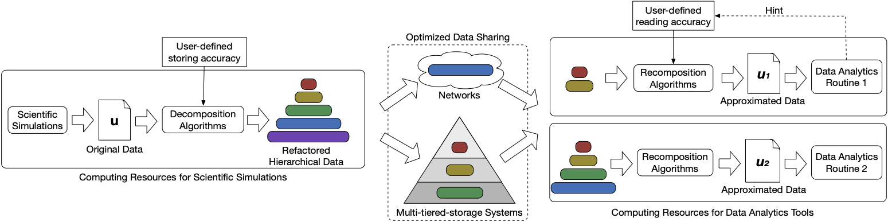
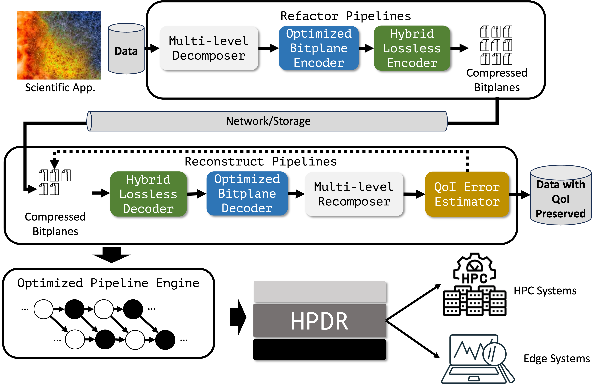
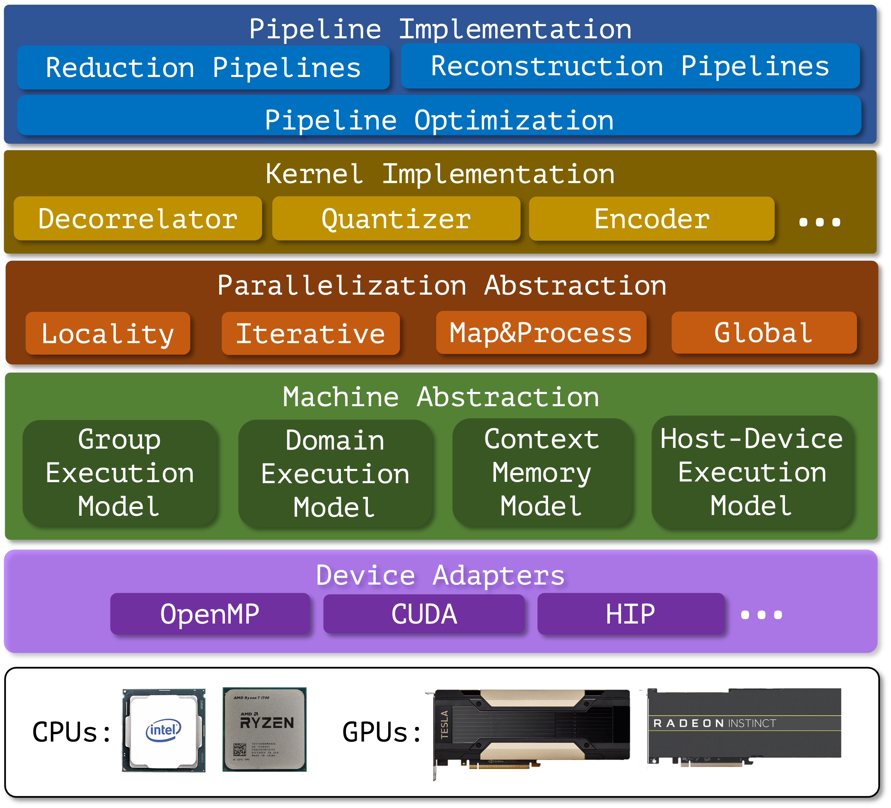
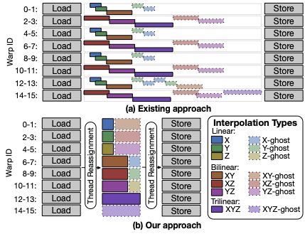
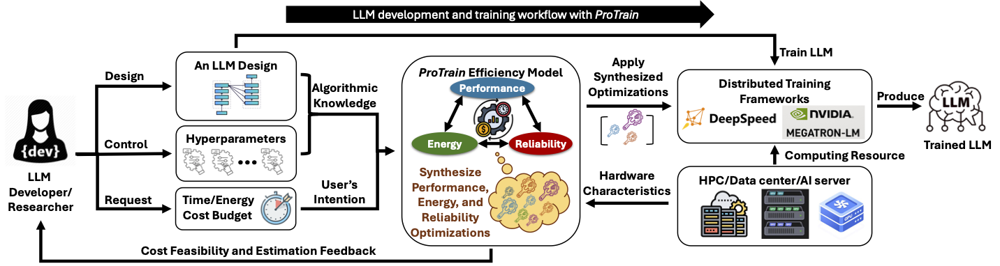
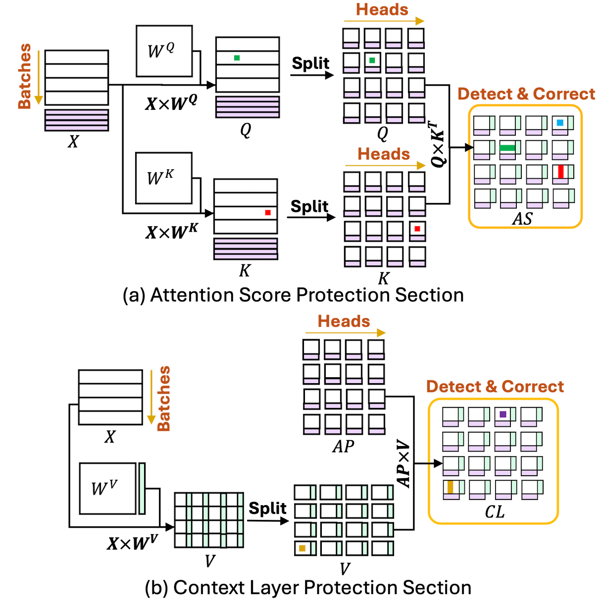

Home | Team | Grants | Projects | Publications | Teaching | Service | CV | We're Hiring! | 招生广告

Jieyang Chen
Assistant Professor
Department of Computer Science
University of Oregon
Eugene, OR 97403
Email: jieyang AT uoregon DOT edu



This project aims to develop a comprehensive data reduction and management framework to enable scalable data analytics for exascale scientific applications. The proposed framework will leverage advanced data reduction techniques, such as lossy compression and in-situ data processing, to significantly reduce the volume of scientific data while preserving its essential features and characteristics. Additionally, the framework will incorporate efficient data management strategies to facilitate seamless data access and retrieval for downstream analytics tasks. By addressing the challenges of data reduction and management at exascale, this project will empower scientists to extract valuable insights from their simulations and experiments, ultimately accelerating scientific discovery in various domains.
-

[ACM/IEEE SC'25] HP-MDR: High-Performance Portable Data Refactoring and Progressive Retrieval for GPUs
Scientific applications produce vast amounts of data, posing grand challenges in the underlying data management and analytic tasks. Progressive compression is a promising way to address this problem, as it allows for on-demand data retrieval with significantly reduced data movement cost. However, most existing progressive methods are designed for CPUs, leaving a gap for them to unleash the power of today's heterogeneous computing systems with GPUs. In this work, we propose HP-MDR, a high-performance and portable data refactoring and progressive retrieval framework for GPUs. [read more] -

[IEEE IPDPS'25] HPDR: High-Performance Portable Scientific Data Reduction Framework
The rapid growth in scientific data generation is outpacing advancements in computing systems necessary for efficient storage, transfer, and analysis, particularly in the context of exascale computing. With the deployment of first-generation exascale computing systems and next-generation experimental facilities, this gap is widening and necessitates effective data reduction techniques to manage enormous data volumes. Over the past decade, various data reduction methods, including lossless compression, error-controlled lossy compression, and data refactoring, have been developed to accelerate I/O in scientific workflows. Despite significant reductions in data volume, these methods introduce considerable computational overhead, which can become the new bottleneck in data processing. To mitigate this, GPU-accelerated data reduction algorithms have been introduced. However, challenges remain in their integration into exascale workflows, including limited portability across different GPU architectures, substantial memory transfer overhead, and reduced scalability on dense multi-GPU systems. To address these challenges, we propose HPDR, a high-performance and portable data reduction framework. [read more] -

[IEEE IPDPS'21] Accelerating Multigrid-based Hierarchical Scientific Data Refactoring on GPUs
Rapid growth in scientific data and a widening gap between computational speed and I/O bandwidth make it increasingly infeasible to store and share all data produced by scientific simulations. Instead, we need methods for reducing data volumes: ideally, methods that can scale data volumes adaptively so as to enable negotiation of performance and fidelity tradeoffs in different situations. Multigrid-based hierarchical data representations hold promise as a solution to this problem, allowing for flexible conversion between different fidelities so that, for example, data can be created at high fidelity and then transferred or stored at lower fidelity via logically simple and mathematically sound operations. However, the effective use of such representations has been hindered until now by the relatively high costs of creating, accessing, reducing, and otherwise operating on such representations. We propose highly optimized data refactoring kernels for GPU accelerators that enable efficient creation and manipulation of data in multigrid-based hierarchical forms. [read more]

This project focuses on optimizing the performance of large language models (LLMs) through system-level enhancements. The research will explore novel techniques for improving the efficiency of LLMs, including reliability, energy efficiency, and performance optimizations. By optimizing the underlying systems that support LLMs, this project aims to enable faster inference and training times, making these powerful models more accessible and practical for a wide range of applications. The outcomes of this research will contribute to advancing the state-of-the-art in natural language processing and artificial intelligence.
-

[ACM PPoPP'25] ATTNChecker: Highly-Optimized Fault Tolerant Attention for Large Language Model Training
Large Language Models (LLMs) have demonstrated remarkable performance in various natural language processing tasks. However, the training of these models is computationally intensive and susceptible to faults, particularly in the attention mechanism, which is a critical component of transformer-based LLMs. In this paper, we investigate the impact of faults on LLM training, focusing on INF, NaN, and near-INF values in the computation results with systematic fault injection experiments. We observe the propagation patterns of these errors, which can trigger non-trainable states in the model and disrupt training, forcing the procedure to load from checkpoints. To mitigate the impact of these faults, we propose \ours, the first Algorithm-Based Fault Tolerance (ABFT) technique tailored for the attention mechanism in LLMs. [read more]
Collaborators